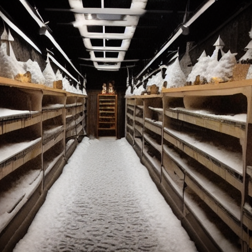
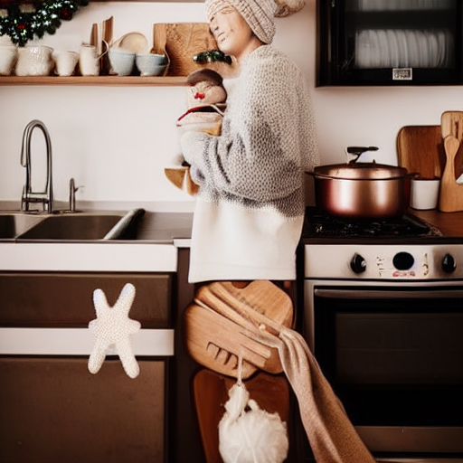
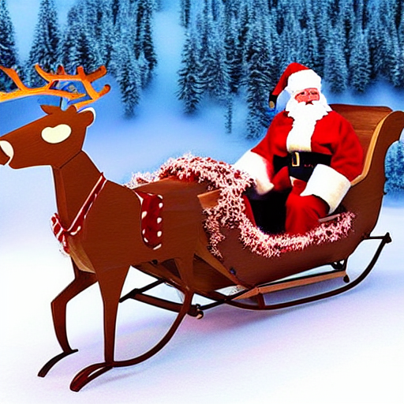
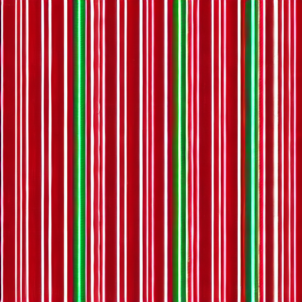

Midnight crept in like a thief, stealing the last vestiges of Christmas magic. The North Pole's bustling workshop, once a whirlwind of joy and laughter, now hummed with a sense of unease. Elves scurried about, their usually merry eyes downcast, as if weighed down by the weight of the world. Santa's booming laughter, a familiar sound, was noticeably absent. A frantic search ensued, but every room, every shelf, and every nook seemed to be devoid of the one thing that could bring the night back on track: Santa's list, the keeper of Christmas secrets.

Mrs. Claus's warm kitchen, a haven from the chaos, beckoned Santa with its familiar scent of baking and love. He entered, his face etched with worry, and found her poised beside the stove, a spatula in hand. Her eyes, a deep well of compassion, met his, and she listened attentively as he recounted his tale of woe. A gentle smile played on her lips, and for a moment, the weight of the world seemed to lift. But as he spoke, a hint of mischief danced in her eyes, and Santa sensed that this was no ordinary crisis.

As the night deepened, Santa's sleigh materialized beside the kitchen, its wooden slats polished to a warm sheen. Rudolph's glowing nose cast a soft light on the scene, illuminating the worried faces of the Clauses. With a gentle nod, Santa accepted the reins, and the reindeer burst into a frenzied trot. The winter landscape blurred into a kaleidoscope of color and light as they soared over snow-covered fields and twinkling villages. The wind whipped through Santa's hair, and his heart swelled with determination – he would find the list, no matter the cost.

The scent of sweet treats wafted through the crisp air, drawing Santa to a quaint bakery nestled in the heart of a snow-covered village. Inside, a charming gingerbread man greeted him with a wide smile, his icing eyes twinkling with mirth. "Oh dear, oh dear!" the little man exclaimed, his voice trembling with urgency. "I saw the list fall from Santa's hands during my busiest baking hour! It's a crumbly trail, but I think I can help you follow it – if you're willing to trust a humble gingerbread man's instincts." Santa's eyes locked onto the gingerbread man's.
Frosty's frozen eyes sparkled with a hint of mischief as Santa arrived at the snowman's icy abode. The jolly snowman's usual grin was replaced by a somber expression, his carrot nose sagging in concern. "I'm so sorry, Santa," Frosty said, his voice a gentle breeze. "I got a bit carried away during our snowy romp, and I inadvertently froze the list in a block of ice. I can try to... thaw it out, but it won't be easy." Santa's eyes widened as he envisioned the consequences of losing the list. Frosty's frozen fingers seemed to hold the only key.
In a hidden glade, a wispy figure beckoned Santa with a sugary smile. The candy cane, its red and white stripes gleaming in the moonlight, presented Santa with a riddle: "What can be broken, but never held?" Santa's brow furrowed in concentration as he pondered the answer. Elara, the enigmatic elf, watched with an air of quiet amusement, her eyes sparkling with a hint of mischief. The candy cane's words seemed to dance on the wind, taunting Santa with their cleverness. Could the answer lie within the sweetest of treats?

In a hidden glade, Elara's eyes gleamed with an otherworldly light as she revealed a small, intricately carved wooden box. "The answer lies within," she whispered, her voice barely audible over the rustling of leaves. Santa's fingers trembled as he opened the box, revealing a delicate, snowflake-shaped key. The key's surface etched with tiny stars, it seemed to shimmer with an ethereal light. Elara's smile grew enigmatic once more, leaving Santa to ponder the key's significance. What did this mysterious key unlock, and how would it aid him in his quest to reclaim the lost list?
Within the crystal orb, the list materialized, its pages fluttering open to reveal the names of the naughty children. Santa's face fell, but a sense of wonder dawned as he realized this was an opportunity to rekindle the spirit of Christmas. He thought of the joy, the laughter, and the love that filled the hearts of children everywhere. With a newfound sense of purpose, Santa grasped the list, his eyes shining with tears. The room began to fade, and the Clauses' workshop was bathed in a warm, golden light. Christmas magic was reborn, and so was Santa's heart.